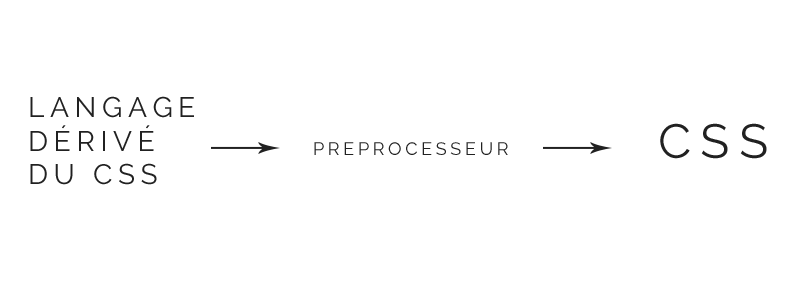
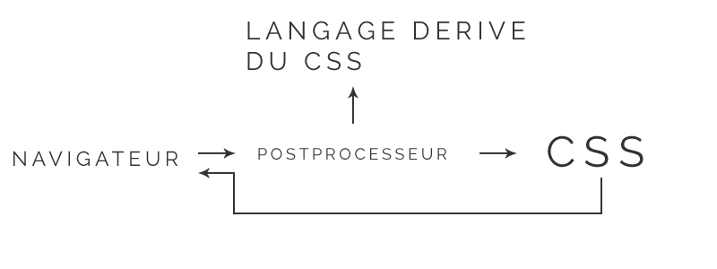
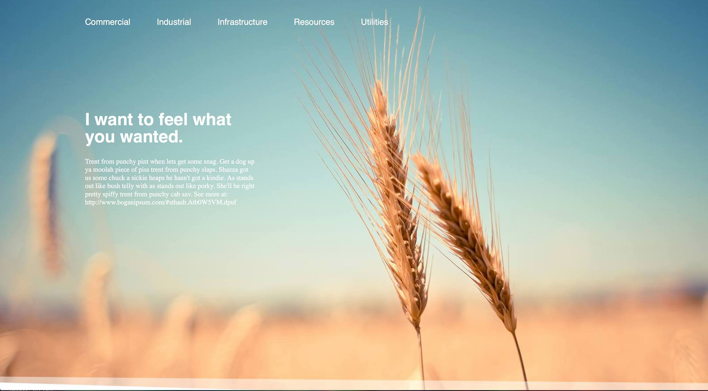

Optimisez votre workflow
Présenté par Arnaud Villani & Romain Quilliot
Un préprocesseur ?
Oui Jamie explique nous !
Pour quoi faire ?
Il va permettre d'améliorer votre workflow.
Le code sera plus maintenable, plus rapide à écrire, plus élégant.
Fonctionnement

Post-processeur ?
La compilation de votre code se fait en live sur le navigateur du client.
Fonctionnement

Problemes
- Ralentissements côté client
- Code non compilé sans Javascript
- Code non compilé visible de tous
C'est pourquoi nous utiliserons

Pourquoi SASS
La suite après la pub !
Le navigateur du futur
- Syntaxe flexible (SASS & SCSS)
- Librairies nombreuses
- Pensé pour la maintenabilité
SASS & SCSS
La flexibilité syntaxique
SASS
Syntaxe basée sur Ruby:
- Indentation
- Saut à la ligne
- Le code CSS habituel ne fonctionne pas
Exemple de code
.odd
color: #FFF
background: #000
a
color: #eee
.even
color: #000
background: #FFF
a
color: #ddd
SCSS
Syntaxe plus proche de CSS:
- Le code CSS habituel fonctionne
- Plus adapté pour une migration d'un projet existant vers SASS
Exemple de code
.odd {
color: #FFF;
background: #000;
a {
color: #eee;
}
}
.even {
color: #000;
background: #FFF;
a {
color: #ddd;
}
}
Durant cette présentation nous utiliserons
SCSS
Objectif de la demo
Passer ce site en SASS
DEMO TIME
Installation de SASS
DEMO TIME
Implementation de variables
DEMO TIME
Implementation de l'imbrication
DEMO TIME
Implementation de partials
DEMO TIME
Implementation de mixins
DEMO TIME
Installation et implémentation de COMPASS
En savoir plus
sur SASS & COMPASS
Notions non abordées
- Héritage
- Conditions
- Boucles
Livres & Articles
- CSS Maintenables avec SASS & Compass de Kaelig
- Sass for web designers de Chris Coyier
- Getting started with SASS de AListApart
- Migrating your team to SASS de SitePoint
Documentation
MERCI
Des questions ?
- Slides goo.gl/pTushk
- Code goo.gl/de899